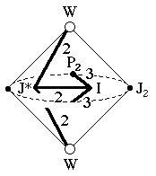
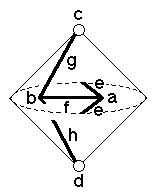

217
217
 219
219 Orbifold Atlas Home Page
Orbifold Atlas Home Page
 Crystallographic Topology Home Page
Crystallographic Topology Home Page
Underlying Topological Space: RP2 double suspension; Figure Pseudo-Symmetry (FPS): 2mm
Euclidean 3-Orbifold with Invariant-Lattice-Complex Letters
(left), Wyckoff Site Letters (right)
 
| FPS | Mult | Lattice Comp | Group Graph | Wyckoff Set | 2[4]Cover |
| 2-1 | I | 332 | a | ||
| 6-1 | J* | 222 | b | ||
| 6-2 | W | 20 | c, d | ||
| 8-1 | I4[P2]& | 2<3>& | e:a-a | ||
| 2 | 12-1 | I6[-]J*2 | 33<2>22 | f:a-b | |
| 12-2 | W2[-]J*2 | 0<2>22 | g:c-b, h:d-b | ||
| 24 | 1 | i:efgh | |||
| 2 | 24-1 | I12[J2]J*4 | 2*=332<1>222 | i1:a-b | #222(h) |
| 24-2 | W4[-]P23 | 2*=20<1>33 | i2:c-e, i3:d-e | #223(j) | |
| m | 24-1 | m* | i4:efi1 | #217(g) | |
| m | 24-1 | m* | i5:fghi1 | #223(k) | |
| Struct-Mult | Critical Points | Heegaard Surf | Wyckoff Cut |
| BCC -1 | I/P2/WW/J* | HP2 200{11} | f |
217
219
Orbifold Atlas Home Page
Crystallographic Topology Home Page
Page last revised: